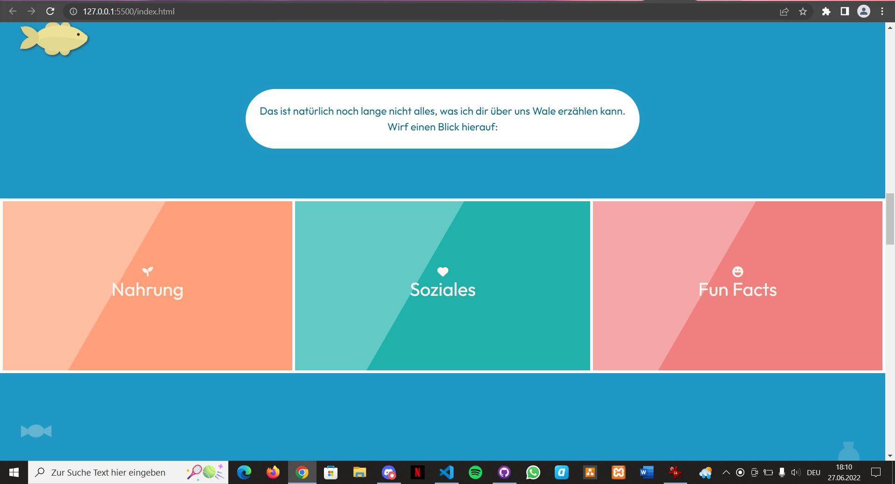
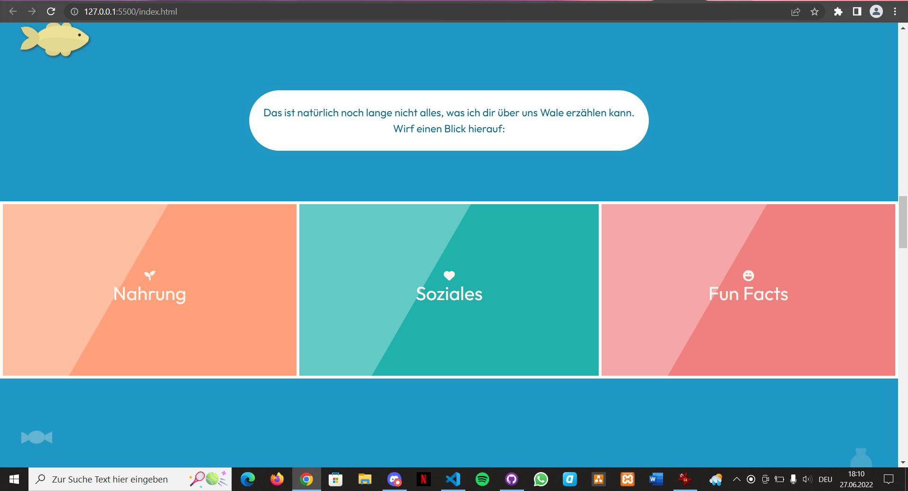

Whale Tales
Information zum Medium
Website auf Basis von HTML5, CSS3 und JavaScript.
Zusammenarbeit in einem GitHub Repository und Veröffentlichung auf GitHub Pages.
Mit Integration von CSS-Framework Bootstrap v5.0.2 und JavaScript-Library jQuery 3.6.0.
Teaserbilder
 


Projektbeschreibung
Unser Projekt ist eine One Page Website zum Thema "Gefährdung von Leben und Gesundheit der Wale durch Plastikmüll".
Sie beschäftigt sich mit Fakten über Wale, der Gefährdung von Walen durch Plastik und Tipps, was jeder im Alltag zur Verbesserung beitragen kann.
Die zentralen Texte stehen in der Du-Perspektive und kommen von einem Wal, Jacob, der sich an den User richtet.
Die angedachte Zielgruppe sind Kinder zwischen 6 - 12 Jahren.
The medium is the message
Wir nutzen zur Darstellung unseres Contents browserspezifische Tools.
- User interactions (Modals, Toggles, etc.)
- CSS-Animations
- Dynamic Content
- Verlinkungen auf andere Websites
Wie?
Wir bündeln in unserem Projekt Informationen aus verschiedenen Quellen.
Der Content wird unterstützt von lebendigen Grafiken, statt nur Text, den man genau so auch in einem Buch finden könnte.
Die Darstellung soll spielerisch wirken und sich an Kinder richten.
Deswegen verwenden wir eine zugängliche und freundliche Sprache und kurze und leicht verständliche Formulierungen.
So schaffen wir eine kindgerechte Informationsvermittlung über ein wichtiges Thema.
Warum eine Website?
Mit einer Website sind wir am zugänglichsten (keine Installation oder Anmeldung nötig, leicht teilbar).
Wir können auf andere Seiten verlinken und von anderen verlinkt werden.